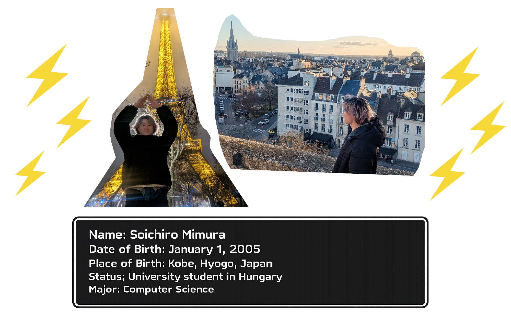
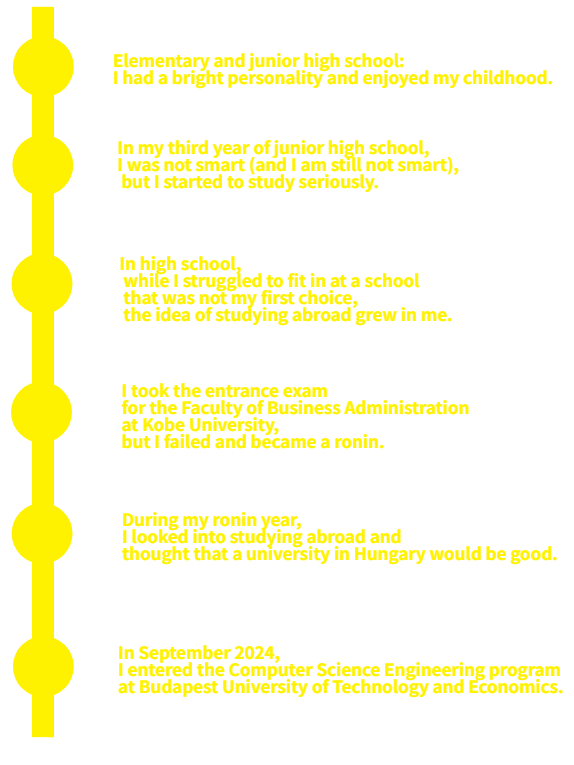
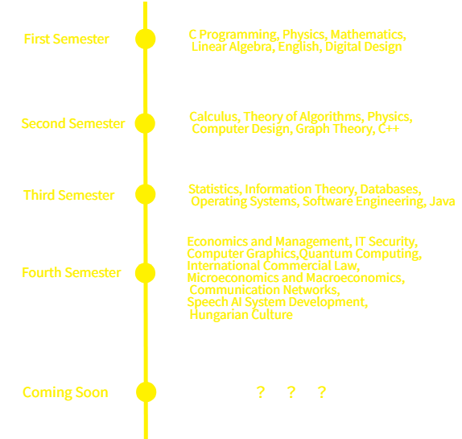

The Reason I Became a University Student in Hungary
In middle school, I was far from a serious student.
However, because I was worried about my future, I studied very hard.
But I failed the high school entrance exam and ultimately enrolled in my second-choice public high school.
In high school, I could not fit in with my classmates because of my strong personality.
For that reason, I started to feel uncomfortable living in Japan, and that made me interested in going abroad.
I decided to study overseas in university. However, studying abroad costs a lot of money.
My family was not rich, so I thought the best choice was to go to a national or public university,
and join an exchange program.
I found out that good universities have exchange programs with strong universities outside Japan,
so I applied to Kobe University, which is well known for business studies in Japan,
but I failed the entrance exam and had to study for one more year.
During my gap year, I started thinking seriously about my future and began to research studying abroad.
Because of money problems, I never thought about full-time study abroad.
But then I found out that Hungary has a scholarship program
that covers tuition fees and also provides housing support and living expenses.
So I decided to go to a university in Hungary.
Thanks to the scholarship, it does not cost that much money!!
In high school, I liked mathematics, and I was also worried about my future.
For these reasons, I decided to study computer science.
That is how I ended up where I am today.
I could talk more, but you might be disappointed, so I'll stop here. 😒
What I Studied and What I Will Study

Explanation
At university, I study Computer Science in English. Although Hungarian is the official language in Hungary, my classmates come from many different countries, and our classes are taught in English. Because of that, I am happy to live my daily life using English. Although many of the subjects are very difficult, I can pass the classes and earn credits. However, sometimes I do not clearly understand what I am doing or how it will be useful in the real world 😂